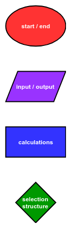
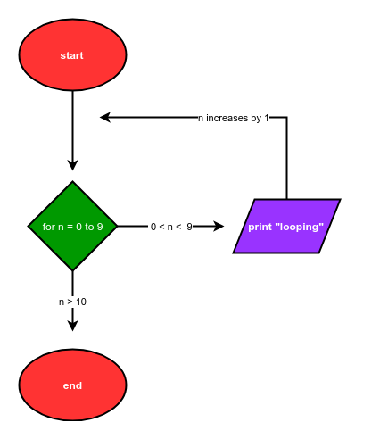
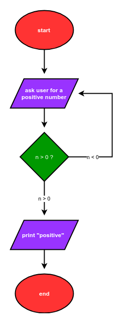

Flowcharts Describing Loops¶
Flowcharts show the flow of a program graphically. Flow charts were introduced in the previous chapter to describe how a programs that include if statements are illustrated graphically.
This chapter is about loops. Flowcharts can also be used to describe programs which contain for loops and while loops.
Basic Flow Chart Shapes¶
Let’s review the four basic flowchart shapes. Each shape represents a different type of operation.
oval: start and end
parallelogram: input and output
rectangle: calculations
diamond: selection structures

The basic shapes in a flowchart are connected by arrows. The shapes and arrows in a flowchart represent the flow of a program from start to end.
Flowchart of a program that contains a for loop¶
Below is the description of a program that can be coded with a for loop:
The program starts. The program prints the word “looping” 10 times. Finally, the program ends.
A flowchart that describes this program is shown.

The Python code that corresponds to this flowchart is below:
# start
for i in range(10):
print("looping")
# end
Flowchart of a program that contains a while loop¶
Below is the description of a program which can be coded with a while loop:
The program starts. The program asks the user for a positive number. If the number is negative, the program asks the user for a positive number again. If the number is positive, the program prints “positive”. Finally, the program ends.
A flowchart that describes this program is shown.

The Python code that corresponds to this flow chart is:
# start
num = -1
while num < 0:
num = input("Enter a positive number: ")
num = float(num)
print("positive")
# end